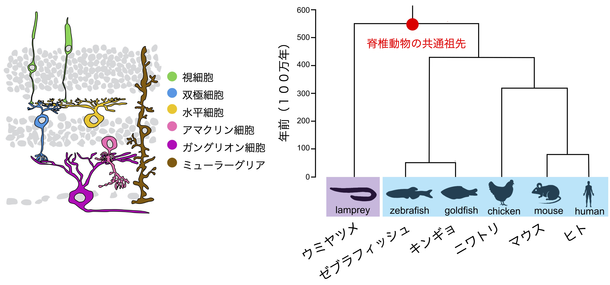

これまでの研究成果
Previous research
網膜神経細胞クラスそれぞれにおける転写因子モチーフの高い種間相同性
Conservation of cis-regulatory codes over half a billion years of evolution.
背景
図１−１ 脊椎動物の網膜（左）と種の系統樹（右）
動物は、進化の過程において生じた細胞種類の多様化により、様々な形質を獲得してそれぞれの環境に適応してきた。細胞の多様化メカニズムを理解するためには、まず種間で相同な細胞を同定する必要がある。近年、シングルセルトランスクリプトーム手法の市販化や解析技術の向上により、幅広い種の脊椎動物を用いた１細胞レベルの比較が行われている。細胞種それぞれに特異的な遺伝子発現を示す分子セットが同定され、相同な細胞クラスを担保する分子特徴が研究されつつある。
これら研究の大半は、細胞タイプ特有の機能（例えば、光受容体におけるオプシンの発現）を制御するエフェクター遺伝子の発現の配列類似性をもとに細胞タイプの進化上の関係、細胞の相同性を類推する。共通の細胞機能は、遠い系統に由来する細胞タイプにおける進化の収束によって生じる可能性がある。その一方で、エフェクター遺伝子の発現を制御する転写制御ネットワークは、進化の長い期間にわたって存続することが多く、進化の比較対象としてはより安定している。転写ネットワークを評価する最も一般的な方法は、個々の細胞型における転写因子の発現を測定することである。しかし、ほとんどの細胞型は数十種類の転写因子を発現しているため、事前知識がなければ、発現パターンだけに基づいて進化比較のための因子を優先順位付けすることは困難だ。またさらには、転写因子が作用する機能的なシス調節領域は非常に早い速度でターンオーバーするため、非コード領域の配列保存性により細胞タイプを比較することも難しい。
生物種間における細胞の相同性を理解するため、網膜は１つの良いモデルである。網膜においては、５種類の神経細胞と１種類のグリア細胞、合計６種類の細胞クラスに大別される（図１−１）。さらに、それぞれの細胞クラスがタイプやサブタイプへと細かく分類される。網膜は非常に高度に保存された３層の構造を成し、細胞クラスはそれぞれ、特定の層へ配置され、特徴的な細胞形態と機能を示す。また、その特徴は生物種間において非常に高度に保存され、幅広い生物を用いて相同な細胞が細胞生理学的に同定されている。
結果
６種類の幅広い生物種ヤツメウナギ、ゼブラフィッシュ、キンギョ、ニワトリ、マウス、ヒトの網膜を用いたシングルセルATAC-seqプロファイルを取得し、網膜のオープンクロマチンデータの解析を行った。６種類の基本的な網膜神経細胞クラス（視細胞、双極細胞、水平細胞、甘くリン細胞、ガングリオン細胞、ミューラーグリア細胞）において、それぞれ特異的に濃縮したオープンクロマチン領域を同定し、さらに細胞クラス特異的な塩基配列パターンを学習した３５の機械学習（gkm-SVM）モデル [６種類の細胞クラスx６種類の生物―ニワトリのガングリオン細胞 (細胞が検出できなかった) ] を作成して、これらモデルを階層的クラスタリングに供することにより、種を超えた細胞クラスの類似性を検証した。その結果、機械学習モデルは、生物種によらず網膜細胞のクラスごとに分類された。この結果から、ヤツメウナギは他の脊椎動物から約５億年前に分岐したにも関わらず、網膜には脊椎動物進化を経ても今もなお保存されたシス調節コードが存在する可能性を見出した。さらなる解析から、それぞれの細胞クラスに濃縮したオープンクロマチン領域には、２か３種類のDNAモチーフが高頻度で存在することが分かった（図１ー２）。これらモチーフはデータベースに登録されている転写因子結合モチーフに類似しており、また解析に供した６種類の脊椎動物において高度に保存されていると判明した。これらをEvolutionarily conserved (EC) モチーフと呼ぶ。ECモチーフはそれぞれの転写因子ファミリーを代表すると考えられ、それぞれの網膜細胞クラス特異的な遺伝子発現は、ECモチーフが織りなす細胞タイプに特徴的なシス調節コードにより達成される可能性が高い。

図１−２ 進化保存された転写因子結合モチーフ
それぞれ対応する転写因子ファミリーを括弧の中に示した（例：PRD-L HD）
裏話
当初の計画ですと、蛍光レポーターを視細胞サブタイプそれぞれに発現するトランスジェニックゼブラフィッシュと、蛍光セルソーターを組み合わせてゼブラフィッシュ視細胞サブタイプをそれぞれ分取した後に、バルクATAC-seqを行う予定でした。パイロット実験はそこそこ上手くいっていましたが、10xGenomicsのシングルセルATAC-seqが市販化され、より強力な後者の手法に完全に移行しました。シングルセルATAC-seqは、ゲノムの情報があれば、トランスジェニックラインを使用せずに１細胞レベルのオープンクロマチンを調べることができるため、私の目的とよく合致しました。
Conservation of cis-regulatory codes over half a billion years of evolution.
Background
Figure 1-1: Vertebrate retina (left) and phylogenetic tree of species (right)
Animals have acquired various traits through the diversification of cell types that occurred during evolution, adapting to their respective environments. To understand the mechanisms of cell diversification, it is first necessary to identify homologous cells between species. Recently, with the commercialization of single-cell transcriptome techniques and advances in analysis technology, single-cell level comparisons using a wide range of vertebrate species have been conducted. Molecular sets showing gene expression specific to each cell type have been identified, and the molecular characteristics that ensure homologous cell classes are being studied.
Most of these studies infer the evolutionary relationships of cell types and the homology of cells based on the sequence similarity of effector gene expression that controls cell type-specific functions (e.g., opsin expression in photoreceptors). Common cell functions may arise through evolutionary convergence in cell types derived from distant lineages. On the other hand, the transcriptional regulatory networks that control effector gene expression often persist over long evolutionary periods and are more stable as evolutionary comparisons. The most common method for evaluating transcriptional networks is to measure the expression of transcription factors in individual cell types. However, since most cell types express dozens of transcription factors, without prior knowledge, it is difficult to prioritize factors for evolutionary comparison based solely on expression patterns. Furthermore, functional cis-regulatory regions where transcription factors act turn over at a very high rate, making it difficult to compare cell types based on the sequence conservation of non-coding regions.
The retina is a good model for understanding cell homology between species. In the retina, there are five types of neurons and one type of glial cell, divided into a total of six cell classes (Figure 1-1). Furthermore, each cell class is finely classified into types and subtypes. The retina forms a highly conserved three-layer structure, with each cell class arranged in specific layers, showing characteristic cell morphology and function. Moreover, these characteristics are highly conserved between species, and homologous cells have been physiologically identified using a wide range of organisms.
Results
We obtained single-cell ATAC-seq profiles using the retinas of six diverse species: lamprey, zebrafish, goldfish, chicken, mouse, and human, and analyzed the open chromatin data of the retina. In the six basic retinal neuron classes (photoreceptors, bipolar cells, horizontal cells, amacrine cells, ganglion cells, Müller glial cells), we identified open chromatin regions specifically enriched in each class and created 35 machine learning (gkm-SVM) models that learned the sequence patterns specific to each cell class [6 cell classes x 6 species - chicken ganglion cells (cells could not be detected)]. By subjecting these models to hierarchical clustering, we verified the similarity of cell classes across species. As a result, the machine learning models were classified by retinal cell class regardless of species. This result suggests that despite lamprey diverging from other vertebrates about 500 million years ago, there may still be conserved cis-regulatory codes in the retina that have persisted through vertebrate evolution. Further analysis revealed that the open chromatin regions enriched in each cell class contained 2 or 3 DNA motifs at high frequency (Figure 1-2). These motifs were similar to transcription factor binding motifs registered in databases and were found to be highly conserved in the six vertebrates analyzed. We call these Evolutionarily conserved (EC) motifs. EC motifs are thought to represent their respective transcription factor families, and the gene expression specific to each retinal cell class is likely achieved by the cis-regulatory codes characteristic of cell types woven by EC motifs.
Figure 1-2: Evolutionarily conserved transcription factor binding motifs
The corresponding transcription factor families are shown in parentheses (e.g., PRD-L HD)
Behind the Scenes
Initially, the plan was to perform bulk ATAC-seq after sorting each zebrafish photoreceptor subtype using transgenic zebrafish expressing fluorescent reporters in each photoreceptor subtype and a fluorescent cell sorter. The pilot experiments were going reasonably well, but with the commercialization of 10x Genomics' single-cell ATAC-seq, we fully transitioned to the more powerful latter method. Single-cell ATAC-seq, which allows the examination of open chromatin at the single-cell level without using transgenic lines if genome information is available, was well suited to my purposes.
ゼブラフィッシュ視細胞サブタイプのネットワークの同定
脊椎動物の視細胞は桿体と錐体の２種類に大別され、このうち、錐体は明るい場所での視覚を担う。さらに、異なる光波長に応答する錐体サブタイプを組み合わせることで、錐体は色覚を担う。脊椎動物が持つ錐体オプシン遺伝子の分子系統比較により、脊椎動物の祖先は紫・青・緑・赤の４種類の錐体オプシンを備え、４色型の色覚を原型とすると推定された。その一方で、哺乳類は青と緑の錐体オプシンを進化の過程で失っている。このため、マウスやヒト等の哺乳類モデルを用いた従来の研究では、青や緑色感受性の錐体サブタイプの生理的な意義に迫ることはできず、またこれら錐体サブタイプに備わる遺伝子発現メカニズムも全くわかっていなかった。
図２−１ 脊椎動物の錐体オプシン遺伝子
私たちは、４種類の錐体サブタイプを備えるゼブラフィッシュにおいて、錐体の発生や分化に寄与する候補因子の機能解析を、遺伝子改変技術を用いて行った。その結果、青錐体と緑錐体それぞれのアイデンティティを規定する転写因子カスケードが明らかとなった（図２−２）（論文１、 論文２、論文３）。さらに、得られた視覚変異体の摂餌行動を解析し、中波長領域感受性の錐体サブタイプの生物学的意義を明らかにした（ビデオ）（論文）。
図２−２ ゼブラフィッシュ錐体視細胞サブタイプにおける転写ネットワーク
ビデオ ゼブラフィッシュ幼生の餌取り行動を変異体と野生型で比較した
変異体（TKO）と野生型コントロール（WT）の行動を比較した。白い点はそれぞれゾウリムシを示す。ゾウリムシを捕食した数を左上に示している。詳しくは論文１を参照してください。
脊椎動物の系統はそれぞれの進化の過程において、錐体細胞サブタイプのレパートリを変化させて光環境に適応してきました。たとえば、哺乳類への進化の過程においては、中波長領域感受性の錐体サブタイプを進化の過程で消失しています（図２−１）。このように、進化の過程における細胞レパートリの増減を可能にする分子メカニズムの一例として、転写調節ネットワークの変化を見出しています。ゼブラフィッシュにおいて中波長領域感受性の錐体サブタイプの分化に必須の転写因子SIX7とFOXQ2は、哺乳類ゲノムにおいてその遺伝子が失われています。これらの結果から、転写因子が織りなす転写調節ネットワークを種間比較することにより、生物種を越えて細胞タイプの相同性が見出されると考えています。
裏話
学部生の頃からポスドク初期まで行った思い出深いテーマです。逆遺伝学的に遺伝子の探索を行う難しさと痛感しました。また、非哺乳類で見出した分子的な知見を哺乳類にて再検証するテーマはある程度ハイインパクトな研究として成立するものの、その逆の哺乳類の知見を非哺乳類へと適応するテーマは、論文のインパクトが非常に落ちてしまうというアンバランスさが身に染みました。
プロジェクトが終わって振り返ってみると、哺乳類で失われた遺伝子が、哺乳類では備わっていないシステム（青と緑感受性の錐体サブタイプの分化制御）を担うことが明らかになり、進化の過程で自然選択が生じたと強く示唆されました。比較分子生物学においては、それぞれの生物に備わる独自のシステムの解析も重要ですが、さらには、哺乳類における知見と照合して、非哺乳類システムを、哺乳類の知に組み込むまで行うと、さらに良いと実感しました。
Identification of Zebrafish Photoreceptor Subtype Networks
Vertebrate photoreceptors are broadly classified into rods and cones, with cones responsible for vision in bright environments. Furthermore, by combining cone subtypes that respond to different wavelengths of light, cones are responsible for color vision. Molecular phylogenetic comparisons of vertebrate cone opsin genes suggest that the ancestor of vertebrates had four types of cone opsins: violet, blue, green, and red, with tetrachromatic color vision as the prototype. On the other hand, mammals have lost blue and green cone opsins during evolution. Therefore, conventional studies using mammalian models such as mice and humans could not approach the physiological significance of blue and green-sensitive cone subtypes, nor did they understand the gene expression mechanisms of these cone subtypes.
Figure 2-1: Vertebrate cone opsin genes
We performed functional analysis of candidate factors contributing to the development and differentiation of cones in zebrafish, which have four types of cone subtypes, using gene modification techniques. As a result, we elucidated the transcription factor cascades that define the identity of blue and green cones, respectively (Figure 2-2) (Paper 1, Paper 2, Paper 3). Furthermore, we analyzed the feeding behavior of the obtained visual mutants and clarified the biological significance of the mid-wavelength-sensitive cone subtypes (Video) (Paper).
Figure 2-2: Transcriptional network in zebrafish cone photoreceptor subtypes
Video: Comparison of prey capture behavior between mutant and wild-type zebrafish larvae
Comparison of behavior between mutants (TKO) and wild-type controls (WT). The white dots represent paramecia. The number of paramecia captured is shown in the upper left. For details, refer to Paper 1.
The lineages of vertebrates have adapted to their light environments by changing the repertoire of cone cell subtypes during evolution. For example, during the evolution of mammals, mid-wavelength-sensitive cone subtypes have been lost (Figure 2-1). As an example of the molecular mechanisms that enable the increase and decrease of cell repertoires during evolution, we have found changes in transcriptional regulatory networks. The transcription factors SIX7 and FOXQ2, essential for the differentiation of mid-wavelength-sensitive cone subtypes in zebrafish, are lost in mammalian genomes. These results suggest that by comparing transcriptional regulatory networks across species, homologous cell types can be identified beyond species.
Behind the Scenes
This is a memorable theme that I worked on from my undergraduate days to the early postdoc period. I keenly felt the difficulty of exploring genes in a reverse genetic manner. Moreover, while themes that revalidate molecular findings discovered in non-mammals in mammals can be established as relatively high-impact research, the reverse theme of applying mammalian findings to non-mammals significantly reduces the impact of the paper, which I felt keenly.
Looking back after the project ended, it became clear that genes lost in mammals are responsible for systems not present in mammals (control of differentiation of blue and green-sensitive cone subtypes), strongly suggesting natural selection during evolution. In comparative molecular biology, it is important to analyze the unique systems of each organism, but furthermore, I realized that it is even better to incorporate non-mammalian systems into mammalian knowledge by cross-referencing findings in mammals.